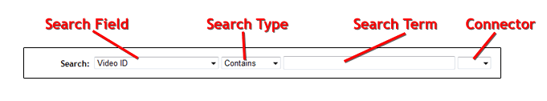
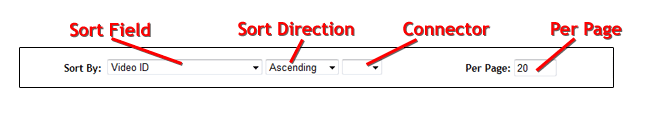

Control Panel Searching Basics
Search Page Fields
Any time you access a search interface, you will find search input fields near the top of the page that will look
something like this:

These search fields will allow you to quickly locate the specific items you are looking for. The control panel search functions offer you a tremendous amount of power because you can search multiple fields at once to drill down and find exactly what you are looking for. You can also sort the results any way you like, and do nested sub-sorting to as deep a level as you like. The following sections will descibe each of the form fields in much more detail.
Text Search Fields
These search fields will allow you to quickly locate the specific items you are looking for. The control panel search functions offer you a tremendous amount of power because you can search multiple fields at once to drill down and find exactly what you are looking for. You can also sort the results any way you like, and do nested sub-sorting to as deep a level as you like. The following sections will descibe each of the form fields in much more detail.
Text search fields will only appear on a few of the search pages in the control panel interface. Using this search field you
can perform what is known as a "full text" search against the items in the database. TubeX uses MySQL's built-in fulltext
searching capabilities for these types of searches. While you can accomplish the same type of search using the standard search
fields, a text search will generally be much faster especially on large data sets. Text search fields will look like this:

Search Fields
-
Search Term - Enter the term (or terms) that you would like to search for in this field
Search Type - Text searches can be done using two different search algorithms:
Natural Language
This search type will take the search term you enter and try to find the most relevent matches. The
search results will be returned in order, from most relevent to least relevent. The Sort fields will
not have any affect when using this type of search.
This type of search does have a few limitations (set by MySQL):
- Any words that appear in more than 50% of the items in the database will not be found as matches
- Any words that are too short will be ignored (default is 4 characters)
- Any common words that match the built in stop-word list (the, some, this, that, etc) will be ignored
Boolean Mode
This search type will allow you to search for matches on any words of a phrase, all words of a phrase, an
exact phrase, and much more.
Some words are ignored in boolean mode searches:
- Any words that are too short will be ignored (default is 4 characters)
- Any common words that match the built in stop-word list (the, some, this, that, etc) will be ignored
The boolean full-text search capability supports the following operators:
+
A leading plus sign indicates that this word must be present in each row that is returned.
-
A leading minus sign indicates that this word must not be present in any of the rows that are returned.
Note: The - operator acts only to exclude rows that are otherwise matched by other search terms. Thus, a boolean-mode search that contains only terms preceded by - returns an empty result. It does not Match "all rows except those containing any of the excluded terms"
(no operator)
By default (when neither + nor - is specified) the word is optional, but the rows that contain it are
rated higher.
*
The asterisk serves as the truncation (or wildcard) operator. Unlike the other operators, it should be
appended to the word to be affected. Words match if they begin with the word preceding the * operator.
"
A phrase that is enclosed within double quote characters matches only rows that contain the phrase
literally, as it was typed.
The following examples demonstrate some search strings that use boolean full-text operators:
apple banana
Find rows that contain at least one of the two words.
+apple +juice
Find rows that contain both words.
+apple macintosh
Find rows that contain the word apple, but rank rows higher if they also contain macintosh
+apple -macintosh
Find rows that contain the word apple, but not macintosh
apple*
Find rows that contain words such as apple, apples, applesauce or applet
"some words"
Find rows that contain the exact phrase "some words" (for example, rows that contain "some words of
wisdom" but not "some noise words". Note that the " characters that enclose the phrase are operator
characters that delimit the phrase. They are not the quotes that enclose the search string itself.
The Search fields will appear on all search pages in the control panel, and are the heart of the search function. Using these
fields you can select the database fields to search, the type of matching to perform, and the search term you would like to use.
You can also connect searches together using AND or OR logic! The search fields will look something like this:
Sort Fields

-
Search Field - Select the database field in which you would like to perform the search. The database fields are
grouped by type (the bold italicized entries) which allow you to search a wide variety of database fields
related to the current item type you are searching
Search Type - TubeX supports a large number of search types which you can use to find exactly what you are looking for. Those search types are:
Contains
Match items that contain the entered search term
!Contains
Match items that do not contain the entered search term
=
Match items that exactly match the entered search term
!=
Match items that do not exactly match the entered search term
>
Match items that are greater than the entered search term
>=
Match items that are greater than or equal to the entered search term
<
Match items that are less than the entered search term
<=
Match items that are less than or equal to the entered search term
Starts With
Match items that start with the entered search term
!Starts With
Match items that do not start with the entered search term
Ends With
Match items that end with the entered search term
!Ends With
Match items that do not end with the entered search term
Between
Match items that are between the entered search termFor this search type, you must enter two values separated by a comma for the search term
!Between
Match items that are not between the entered search termFor this search type, you must enter two values separated by a comma for the search term
In
Match items that match exactly one of the items entered for the search termFor this search type, you must enter a comma separated list of values for the search term
!In
Match items that do not match exactly one of the items entered for the search termFor this search type, you must enter a comma separated list of values for the search term
Empty
Match items that are empty (empty string or NULL)Leave the search term empty for this type
!Empty
Match items that are not empty (empty string or NULL)Leave the search term empty for this type
Is Null
Match items that are the special SQL NULL valueLeave the search term empty for this type
!Null
Match items that are not the special SQL NULL valueLeave the search term empty for this type
Length =
Match items with a string length equal to the number entered as the search term
Length >
Match items with a string length greater than the number entered as the search term
Length <
Match items with a string length less than the number entered as the search term
Regex
Match items that match the
regular expression
entered as the search term
!Regex
Match items that do not match the
regular expression
entered as the search term
Search Term - Enter the term that you would like to search for in this field
Connector - The connector field allows you to search multiple database fields at once. You can select either AND or OR as the connector. When you select one of these options, you will see a new set of Search fields appear directly below. If you then change this option back to the empty value, the additional Search fields will be removed.
AND
Both (the one containing the AND, and the one directly after) of the searches must match in order for the
item to be returned as a result
OR
Either (the one containing the OR, and the one directly after) of the two sets of searches can match in
order for the item to be returned as a result
The sort fields allow you to control how the search results are sorted and how many are displayed on each page. They will look
something like this:

-
Sort Field - Select the database field by which you would like the search results sorted. The sort fields are
grouped by type (the bold italicized entries) which allow you to sort by a wide variety of database fields
related to the current item type you are searching
Sort Direction - Select the direction in which the search results should be sorted. Ascending will sort from smallest to largest, and Descending will sort from largest to smallest
Connector - The connector field allows you to do sub-sorting of the search results. If you select the "then" option, you will see a new set of sorting fields appear which you can use to control how items with the same value for the previous sorting item will be sorted. Selecting the empty value will cause the additional set of fields to be removed.
As an example, assume you wanted to sort the user accounts by their birthday first. It is possible that several user accounts will have the same birthday, so you can use a connector to sub-sort those accounts. You might decide to sub-sort them by their signup date so you can see which person with a particular birthday signed up first.
Per Page - Enter the number of search results to show on each page. This can be any numerical value greater than zero